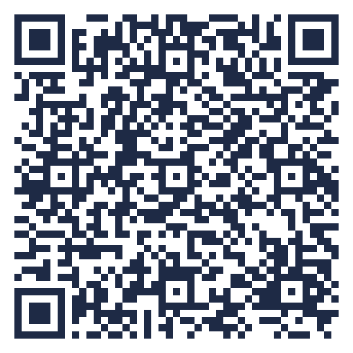
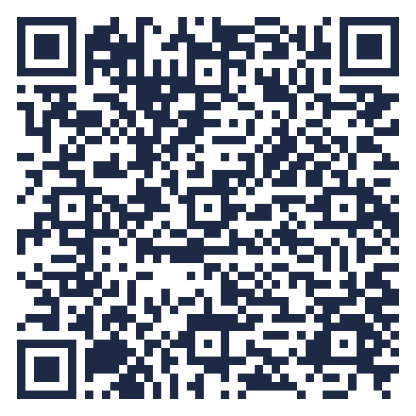

To tavler i rommet
Deltakerne skanner QR-koden og skriver kortet sitt rett på tavla, uten å logge inn. Vis tavla på skjermen mens kortene kommer inn, og les den sammen etterpå.
-

Tavle 1 · ÅpningFullfør setningene
- Jeg vet at elevene er med når …
- Jeg blir usikker på om de er med når de bruker KI fordi …
-

Tavle 2 · Bolk 1Fire sider ved engasjement
- Hvordan får vi øye på hva elevene gjør når de arbeider med KI?
- Hvilke følelser merker vi hos elevene når de bruker KI?
- Hva gjør elevene med det KI gir dem?
- Hvem styrer arbeidet når elevene bruker KI?
Les tavla sammen
Snakk først i par, og løft så noen funn i plenum.
- Hva går igjen?
Er det ting vi ser at elevene gjør, eller ting vi tolker at de tenker og føler?
- Hva kan KI vise fram?
Hvilke av tegnene kunne en elev vist fram ved hjelp av KI, uten å være med i arbeidet?
- Hva handler usikkerheten om?
Produktet elevene leverer, eller prosessen bak det?
- Hva trenger vi å se?
Hva skulle dere trengt å se for å bli tryggere på at elevene er med, også når de bruker KI? På tavle 2: Hvilke dimensjoner fikk mange kort, og hvilke fikk få?
Lag din egen tavle
Aktiviteten virker med alle verktøy der elevene kan skrive korte svar som dere ser samlet. Bruk verktøyene skolen har avtale om, og logg inn med skolekontoen.
- Microsoft Whiteboard i TeamsElevene legger lapper på en felles tavle, og dere flytter dem inn i kolonner sammen.
- Microsoft FormsEtt åpent spørsmål og en QR-kode. Svarene samles i Excel og kan vises på skjermen.
- TaskCards eller PadletNår skolen har avtale: én kolonne per setning eller per kategori.
- Uten skjermLapper og en vegg gjør samme nytten. Det viktigste er samtalen etterpå.
Tavlene til fagdagen ligger i NTNUs TaskCards, som NTNU har databehandleravtale for. Skriv uten navn. Etter fagdagen settes tavlene til bare lesing.